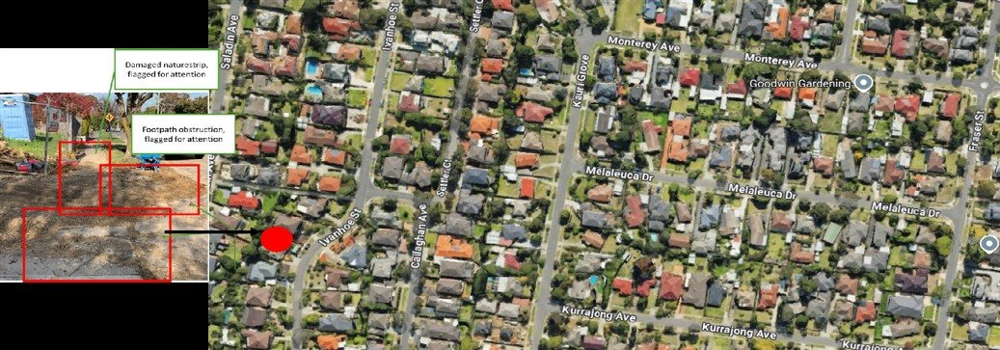
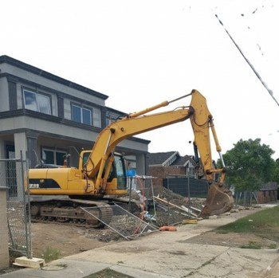
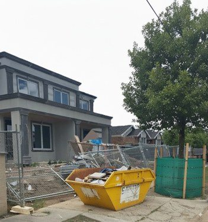
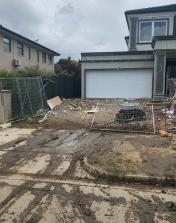
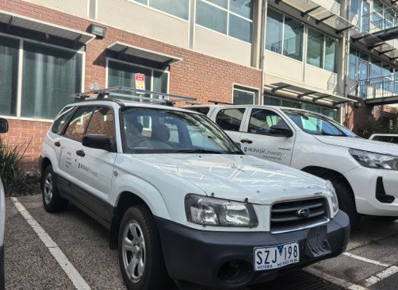
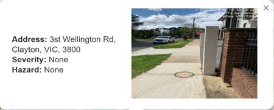

Smart-City Asset and Hazard Assessment






Flagged for AttentionSmart Cities
Our Smart City R&D solutions connect sensing, location analytics, geospatial data and visualisation to support urban asset monitoring, assessment and protection. Pilots demonstrate how these capabilities can help councils understand asset condition, prioritise maintenance and improve urban infrastructure management.